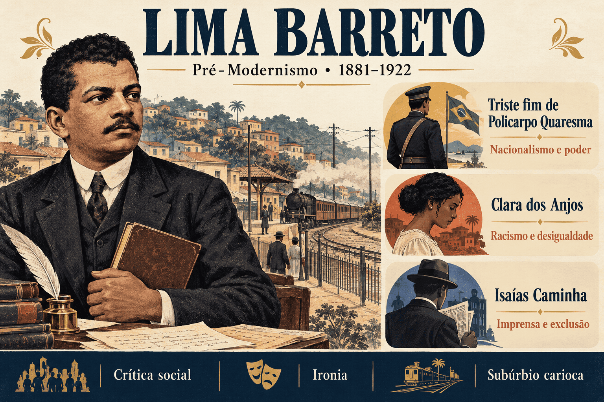

Lima Barreto: biografia, obras, características literárias e crítica social
Lima Barreto foi romancista, contista, cronista e jornalista brasileiro. Sua literatura colocou em primeiro plano personagens que a sociedade da Primeira República frequentemente tratava como secundários: trabalhadores suburbanos, pessoas negras, mulheres pobres e pequenos funcionários públicos. Ao acompanhar suas expectativas e frustrações, o escritor expôs o racismo, o autoritarismo, o prestígio das aparências e a distância entre os discursos oficiais e a vida cotidiana.
Autor de Triste fim de Policarpo Quaresma, Recordações do escrivão Isaías Caminha e Clara dos Anjos, é um dos nomes centrais do Pré-Modernismo brasileiro. Sua prosa combina observação social, ironia e linguagem acessível, questionando tanto as instituições políticas quanto os critérios de consagração intelectual.
Estudar Lima Barreto exige perceber como suas escolhas narrativas produzem crítica social: o subúrbio ganha espessura humana, o herói patriota se confronta com a violência do Estado e o jovem que acredita no mérito descobre barreiras raciais e relações de favorecimento.

Lima Barreto em resumo
- Nome completo: Afonso Henriques de Lima Barreto.
- Nascimento: 13 de maio de 1881, no Rio de Janeiro.
- Falecimento: 1º de novembro de 1922, no Rio de Janeiro.
- Período literário: Pré-Modernismo, convencionalmente situado entre 1902 e 1922.
- Atuação: romancista, contista, cronista, jornalista e funcionário público.
- Obras centrais: Recordações do escrivão Isaías Caminha (1909), Triste fim de Policarpo Quaresma (1915, em livro) e Clara dos Anjos (1948, em livro, publicação póstuma).
- Temas: racismo, desigualdade, subúrbio, burocracia, nacionalismo, exclusão feminina e autoritarismo.
- Estilo: linguagem direta, ironia, sátira, observação do cotidiano e aproximação com a oralidade.
Quem foi Lima Barreto?
Afonso Henriques de Lima Barreto nasceu no Rio de Janeiro ainda durante o Império. Filho de João Henriques de Lima Barreto, tipógrafo, e de Amália Augusta Barreto, professora, cresceu em uma família negra que valorizava a educação. Sua trajetória atravessou a abolição da escravidão e a implantação da República, transformações que não eliminaram as hierarquias raciais brasileiras.
Ingressou na Escola Politécnica, mas não concluiu o curso de Engenharia. As dificuldades financeiras e as responsabilidades familiares, agravadas pelo adoecimento do pai, interferiram em sua formação. Em 1903, tornou-se funcionário da Secretaria da Guerra, trabalho que lhe proporcionou contato com a rotina burocrática depois examinada em sua ficção.
Paralelamente, colaborou na imprensa e desenvolveu sua carreira literária. Morador de bairros suburbanos, especialmente Todos os Santos, observou as relações entre trabalhadores, pequenos proprietários, funcionários e pessoas que dependiam de favores para obter reconhecimento. Esses espaços constituem uma dimensão decisiva de sua obra.
O escritor enfrentou discriminação racial, dificuldades materiais e problemas de saúde relacionados também ao consumo de álcool. Passou por internações psiquiátricas, experiências que alimentaram registros sobre a perda de autonomia e a violência institucional. Reduzir sua produção a esses episódios, porém, apaga sua atuação intelectual e o trabalho consciente de construção de uma literatura socialmente crítica.
Contexto histórico: a República e os limites da cidadania
A literatura de Lima Barreto interroga as promessas de modernização da Primeira República, também chamada de República Velha. A mudança de regime não assegurou participação política ampla nem condições dignas à população recém-saída da escravidão. A capital federal apresentava avanços materiais ao mesmo tempo que mantinha mecanismos de exclusão.
- Pós-abolição: a liberdade jurídica não foi acompanhada de políticas suficientes de inclusão, acesso à terra e combate à discriminação.
- Reformas urbanas: intervenções no centro do Rio de Janeiro valorizaram uma imagem de progresso, enquanto remoções e desigualdades atingiam moradores pobres.
- Prestígio social: títulos, relações pessoais e aparência de erudição podiam funcionar como instrumentos de ascensão.
- Autoritarismo: a repressão a opositores contradizia os ideais republicanos de liberdade e cidadania.
- Racismo científico: teorias que hierarquizavam grupos humanos circulavam como conhecimento legítimo; a obra barretiana questiona seus efeitos desumanizadores.
Chave de leitura: em Lima Barreto, a modernização precisa ser examinada a partir de quem permanece excluído. Uma cidade reformada ou uma República proclamada não significam, por si sós, igualdade de direitos.
Lima Barreto e o Pré-Modernismo
O Pré-Modernismo não corresponde a uma escola homogênea, com manifesto e programa estético compartilhado. É uma classificação utilizada para reunir produções do início do século XX que, de modos diferentes, revelaram conflitos brasileiros e tensionaram valores literários estabelecidos.
Lima Barreto participa desse quadro ao deslocar o olhar para os subúrbios, enfrentar o preconceito e recusar a ostentação verbal como medida de qualidade artística. Sua escrita dialoga com a tradição realista e antecipa preocupações que ganhariam força no Modernismo, mas possui projeto próprio. O autor não deve ser tratado apenas como uma preparação para os escritores de 1922.
A comparação com Euclides da Cunha evidencia a diversidade do período: enquanto Os Sertões combina investigação histórica e linguagem de forte densidade científica, Lima Barreto frequentemente prefere a sátira e a observação das relações urbanas.
Características literárias de Lima Barreto
- Linguagem direta: a clareza e a aproximação com usos cotidianos da língua favorecem a comunicação com o leitor e questionam o culto à expressão rebuscada.
- Ironia e sátira: o contraste entre aquilo que as personagens afirmam e aquilo que efetivamente fazem expõe interesses, vaidades e contradições.
- Crítica ao racismo: a discriminação aparece em situações concretas de trabalho, convivência, reconhecimento intelectual e relacionamento afetivo.
- Representação do subúrbio: moradias, transportes, músicas, encontros e dificuldades materiais integram a construção do mundo narrado.
- Questionamento do poder: militares, políticos, jornalistas e burocratas são examinados a partir dos efeitos de suas práticas sobre outras pessoas.
- Personagens em desajuste: seus projetos de vida entram em conflito com uma sociedade organizada pelo privilégio.
- Diálogo entre experiência e ficção: elementos da trajetória do escritor reaparecem transformados literariamente, sem tornar autor e narrador a mesma pessoa.
Atenção ao estilo: linguagem acessível não equivale a ausência de elaboração. Em Lima Barreto, o efeito crítico depende da seleção dos detalhes, da organização do enredo, do ponto de vista e da ironia.
Principais obras de Lima Barreto
| Obra | Publicação | Questões centrais |
|---|---|---|
| Recordações do escrivão Isaías Caminha | 1909 | Racismo, imprensa, ambição e desilusão diante dos mecanismos de ascensão social. |
| Triste fim de Policarpo Quaresma | 1911, em folhetins; 1915, em livro | Nacionalismo idealizado, vida rural, burocracia e repressão política. |
| Numa e a Ninfa | 1915 | Sátira à carreira política e às relações de influência. |
| Vida e morte de M. J. Gonzaga de Sá | 1919 | Memória urbana, reflexão sobre a cidade e observação das desigualdades. |
| Histórias e sonhos | 1920 | Contos que exploram conflitos sociais, comportamentos e situações satíricas. |
| Clara dos Anjos | 1923–1924, em publicação seriada; 1948, em livro | Racismo, desigualdade de gênero e vulnerabilidade de uma jovem suburbana. |
Triste fim de Policarpo Quaresma: resumo e análise
Publicado inicialmente em folhetins, em 1911, e lançado em livro em 1915, o romance acompanha Policarpo Quaresma, funcionário público conhecido como major Quaresma. Seu patriotismo nasce de leituras e de uma confiança intensa nas possibilidades do país. O conflito se estabelece quando essa imagem idealizada encontra a sociedade brasileira.
As três etapas do projeto patriótico
- Projeto cultural: Quaresma procura valorizar tradições nacionais e propõe que o tupi seja adotado como língua oficial. Sua iniciativa provoca ridicularização e integra um processo de isolamento que culmina em internação.
- Projeto agrícola: no sítio Sossego, tenta demonstrar a fertilidade e a riqueza do território. Enfrenta pragas, dificuldades de produção e obstáculos políticos e administrativos que desmentem a ideia de prosperidade automática.
- Projeto político: apoia o governo de Floriano Peixoto durante a Revolta da Armada, acreditando defender a República. O contato com a repressão e a arbitrariedade militar destrói essa expectativa.
Personagens importantes
- Policarpo Quaresma: protagonista cujo idealismo combina generosidade, disciplina e dificuldade de avaliar criticamente as instituições.
- Adelaide: irmã de Quaresma, acompanha sua vida doméstica e suas dificuldades.
- Olga: afilhada do protagonista, demonstra sensibilidade diante de suas experiências e questiona convenções sociais.
- Ricardo Coração dos Outros: músico ligado à modinha e ao violão, evidencia discussões sobre cultura popular e prestígio artístico.
- Floriano Peixoto: personagem histórica representada ficcionalmente em uma perspectiva crítica do poder republicano.
A crítica ao nacionalismo ufanista
O ufanismo exalta a pátria de maneira excessiva e pouco crítica. Quaresma acredita que a natureza brasileira, suas tradições e um governo forte poderiam garantir a grandeza nacional. O romance desmonta essa certeza ao mostrar que nenhum desses elementos resolve, isoladamente, a desigualdade e o abuso de poder.
Isso não significa que o narrador despreze o país ou considere inútil qualquer compromisso coletivo. A tragédia nasce justamente da incompatibilidade entre a dedicação sincera de Quaresma e instituições incapazes de corresponder a ela. A ironia permite reconhecer a ingenuidade do personagem sem apagar sua dignidade.
O desfecho e a violência do Estado
Ao protestar contra a violência dirigida a prisioneiros, Quaresma passa de apoiador a suspeito aos olhos do governo. Preso e ameaçado de morte, reavalia a pátria à qual dedicou sua vida. O encerramento encaminha seu destino trágico sem apresentar uma cena explícita de execução.
Para interpretar: o fracasso de Quaresma não se explica apenas por uma deficiência individual. Cada etapa de seu projeto revela obstáculos sociais e políticos que colocam em crise a imagem idealizada da nação.
Clara dos Anjos: racismo, gênero e desigualdade
Concluído no fim da vida do escritor, o romance teve publicação póstuma em periódico, entre 1923 e 1924, e saiu em livro em 1948. A protagonista, Clara dos Anjos, é uma jovem negra, descrita no vocabulário racial da época como mulata, filha de Joaquim dos Anjos e Engrácia. Sua família vive no subúrbio carioca.
Clara envolve-se com Cassi Jones, homem branco que utiliza o prestígio de sua aparência, a música e promessas amorosas para seduzir mulheres socialmente vulneráveis. Grávida e abandonada, a jovem enfrenta a hostilidade da família dele, que a desqualifica racial e socialmente.
A narrativa articula raça, gênero e classe: a desproteção de Clara não resulta simplesmente de uma escolha amorosa equivocada. Depende também de uma sociedade que responsabiliza a mulher, naturaliza a impunidade masculina e distribui reconhecimento de forma desigual.
Personagens como Dona Margarida, que procura amparar Clara, também mostram possibilidades de apoio e resistência. O subúrbio abriga relações solidárias e contradições internas; não é representado como um espaço uniforme.
Evite uma leitura moralista: reduzir a obra a uma advertência contra a ingenuidade feminina enfraquece sua crítica. O problema central envolve as condições que permitem a exploração de mulheres pobres e negras e dificultam sua proteção.
Recordações do escrivão Isaías Caminha: racismo e imprensa
Publicado em 1909, o romance apresenta as lembranças de Isaías Caminha, jovem negro que chega ao Rio de Janeiro com expectativas de estudo e ascensão social. Sua confiança na inteligência e no esforço pessoal encontra práticas discriminatórias e relações de favorecimento.
A experiência no jornal fictício O Globo permite examinar a distância entre o poder de formar opiniões e o compromisso com a verdade. Vaidades, disputas internas e interesses políticos participam da engrenagem jornalística. O nome designa o periódico do romance, publicado antes da fundação do jornal carioca homônimo, em 1925.
A narração em primeira pessoa aproxima o leitor do sofrimento e das avaliações de Isaías. Como se trata de um relato retrospectivo, importa observar não apenas os acontecimentos, mas o modo como o narrador os reorganiza e interpreta.
O livro dialoga com experiências de Lima Barreto na imprensa e com o racismo que enfrentou, mas não deve ser lido como uma transcrição documental de sua vida. A transformação da experiência em ficção envolve escolhas de personagens, episódios e linguagem.
O subúrbio carioca na literatura de Lima Barreto
O subúrbio não funciona apenas como localização geográfica. É um espaço de experiência e produção cultural que permite observar os efeitos da desigualdade sobre a rotina. Trens, casas modestas, encontros musicais e relações de vizinhança aproximam o leitor de modos de vida frequentemente afastados dos ambientes de maior prestígio.
Ao conferir centralidade a esses lugares, Lima Barreto questiona a identificação entre a cidade e sua fachada modernizada. O Rio de Janeiro também é constituído por quem enfrenta longos deslocamentos, falta de recursos e dificuldades de acesso ao reconhecimento.
Essa atenção não transforma seus personagens em exemplos abstratos de pobreza. Eles desejam, disputam, julgam e cultivam valores contraditórios. A crítica social ganha força porque se realiza por meio de vidas particulares.
Contos e sátiras: o prestígio das aparências
O homem que sabia javanês
No conto, Castelo relata como conseguiu reconhecimento ao fingir conhecer javanês. A falta de meios para verificar sua competência e a admiração por um saber considerado exótico favorecem a fraude. O humor expõe uma sociedade na qual a aparência de conhecimento pode valer mais do que sua efetiva demonstração.
A nova Califórnia
A possibilidade de produzir ouro a partir de ossos humanos desencadeia uma corrida pela riqueza. A mudança de comportamento dos habitantes evidencia a fragilidade de valores supostamente sólidos quando confrontados com a cobiça. O absurdo funciona como instrumento de crítica ao interesse material.
Os Bruzundangas
Ao descrever um país fictício, o autor cria distanciamento satírico para examinar práticas reconhecíveis na sociedade brasileira. A valorização de títulos, a política de favorecimentos e a ostentação intelectual ganham destaque nessa representação.
Lima Barreto e Euclides da Cunha: aproximações e diferenças
| Aspecto | Lima Barreto | Euclides da Cunha |
|---|---|---|
| Espaço de destaque | O Rio de Janeiro e seus subúrbios, sem excluir a experiência rural de Quaresma. | O sertão de Canudos, sobretudo em Os Sertões. |
| Construção da linguagem | Prosa direta, sátira, ironia e aproximação com o cotidiano. | Prosa erudita, vocabulário científico e imagens dramáticas. |
| Crítica à República | Exclusão racial, burocracia, favorecimento e repressão. | Abandono dos sertanejos e violência da campanha militar. |
| Teorias raciais | Enfrentamento do preconceito e das hierarquias que atingem pessoas negras. | Presença de explicações deterministas e raciais hoje superadas, em tensão com a valorização da resistência sertaneja. |
| Ponto de encontro | Exposição das contradições nacionais e das populações marginalizadas pelos projetos oficiais de progresso. | |
Importância e legado de Lima Barreto
Lima Barreto ampliou as possibilidades de representação da sociedade brasileira ao fazer da exclusão um problema central da forma literária. Seu legado envolve o enfrentamento do racismo, a valorização de experiências suburbanas e a crítica aos modos pelos quais instituições selecionam quem pode ser ouvido.
Seu lugar na literatura também convida a reconsiderar a oposição simplificadora entre elaboração estética e compromisso social. Em seus romances e contos, a dimensão política depende da construção da ironia, do percurso das personagens e das diferenças entre aparência e realidade.
Lima Barreto no ENEM, no PAES UEMA e nos vestibulares
Para estudar o autor em avaliações de literatura e interpretação, priorize as relações entre linguagem, contexto e perspectiva narrativa. Os tópicos abaixo são orientações de estudo, não uma previsão de questões ou indicação de obra obrigatória.
- A crítica ao nacionalismo idealizado e ao autoritarismo em Triste fim de Policarpo Quaresma.
- A articulação entre racismo, condição feminina e desigualdade em Clara dos Anjos.
- O conflito entre mérito e privilégio em Recordações do escrivão Isaías Caminha.
- A representação do subúrbio e a valorização de sujeitos socialmente marginalizados.
- Os efeitos de sentido da ironia e da sátira nos contos.
- A diversidade de estilos e projetos reunidos sob a classificação de Pré-Modernismo.
Como interpretar um trecho de Lima Barreto?
- Identifique quem narra e de que posição avalia os acontecimentos.
- Observe o que a personagem espera e quais obstáculos encontra.
- Localize contrastes entre discursos de prestígio e comportamentos concretos.
- Examine como detalhes do espaço e das relações sociais sustentam a crítica.
- Relacione o efeito de humor ou de frustração à questão social encenada.
Erros comuns ao estudar Lima Barreto
- Confundir linguagem direta com falta de técnica: a aparente simplicidade pode sustentar uma construção irônica complexa.
- Classificá-lo como integrante da Semana de 1922: sua obra é estudada no Pré-Modernismo e não se confunde com o programa da fase heroica.
- Considerar Quaresma apenas ridículo: o romance combina crítica à sua ingenuidade e reconhecimento de sua integridade.
- Responsabilizar exclusivamente Clara pelo abandono: a narrativa revela estruturas de discriminação e desproteção.
- Igualar Isaías Caminha ao autor: vínculos autobiográficos não eliminam a mediação ficcional.
- Tomar 1948 como data de escrita de Clara dos Anjos: esse é o ano da edição póstuma em livro.
- Tratar o subúrbio como cenário passivo: suas práticas culturais e relações sociais participam da construção dos conflitos.
Quiz sobre Lima Barreto
Questões de interpretação — nível avançado
Questão 1 — A passagem de Quaresma pelos projetos cultural, agrícola e político produz qual efeito na composição do romance?
Questão 2 — Em Clara dos Anjos, a reação da família de Cassi Jones ao sofrimento da protagonista permite compreender que:
Questão 3 — A narração retrospectiva de Isaías Caminha exige que o leitor:
Questão 4 — O êxito da fraude de Castelo, em O homem que sabia javanês, dirige a sátira principalmente:
Questão 5 — A centralidade do subúrbio na obra barretiana contribui para:
Questão 6 — A comparação entre Lima Barreto e Euclides da Cunha permite caracterizar o Pré-Modernismo como:
Resumo final sobre Lima Barreto
- Escritor negro carioca, Lima Barreto viveu entre 1881 e 1922 e é estudado no Pré-Modernismo.
- Sua prosa articula linguagem direta, ironia e crítica às formas de privilégio.
- Triste fim de Policarpo Quaresma problematiza o ufanismo e a violência republicana.
- Clara dos Anjos relaciona racismo, desigualdade de gênero e vulnerabilidade social.
- Recordações do escrivão Isaías Caminha examina a discriminação e os bastidores da imprensa.
- O subúrbio é espaço de cultura, conflito e experiência humana, não apenas cenário.
- Contos como O homem que sabia javanês denunciam o prestígio das aparências.
Perguntas frequentes sobre Lima Barreto
Quem foi Lima Barreto?
Foi um escritor, jornalista e funcionário público carioca cuja obra examina o racismo, as desigualdades e as contradições da República brasileira.
A qual movimento literário ele pertence?
É estudado no Pré-Modernismo, classificação que reúne projetos literários diversos do início do século XX, sem constituir uma escola de estilo único.
Quais são suas principais obras?
Triste fim de Policarpo Quaresma, Recordações do escrivão Isaías Caminha e Clara dos Anjos estão entre seus romances centrais. Sua produção também inclui contos, crônicas e sátiras.
Qual é a crítica de Triste fim de Policarpo Quaresma?
O romance confronta o nacionalismo idealizado do protagonista com dificuldades concretas do país e com a violência do poder republicano.
Por que Clara dos Anjos é importante?
Porque evidencia como o preconceito racial e as desigualdades de classe e de gênero se articulam na exploração e no abandono de uma jovem suburbana.
Quando Clara dos Anjos foi publicado?
O romance circulou postumamente em publicação seriada entre 1923 e 1924. A edição em livro apareceu em 1948.
Qual é o papel do subúrbio em sua obra?
O subúrbio permite representar práticas culturais, relações de vizinhança e desigualdades que desafiam a imagem de uma capital inteiramente moderna e próspera.
A linguagem simples significa ausência de elaboração?
Não. A clareza convive com escolhas de composição, ponto de vista, ironia e sátira que sustentam a força crítica dos textos.
Conteúdos relacionados
- Pré-Modernismo no Brasil: contexto, características, autores e obras
- Euclides da Cunha: vida, obras e características literárias
- Realismo no Brasil: contexto, características, autores e obras
- Machado de Assis: biografia, obras e características literárias
- Aluísio Azevedo: biografia, obras e características literárias
- Naturalismo no Brasil: características, autores e obras
Conclusão
A literatura de Lima Barreto mostra que a vida nacional não pode ser compreendida apenas por seus discursos de grandeza. O olhar sobre pessoas negras, mulheres pobres, pequenos funcionários e moradores suburbanos revela o que as imagens oficiais de progresso tendem a deixar de fora.
Ao transformar essas experiências em romances, contos e crônicas, o escritor construiu uma obra em que crítica social e criação literária se sustentam mutuamente. Sua leitura continua produtiva porque permite discutir não apenas o Brasil de seu tempo, mas os mecanismos pelos quais uma sociedade distribui poder, reconhecimento e dignidade.
Referências
- BARRETO, Lima. Triste fim de Polycarpo Quaresma. Rio de Janeiro: Typ. Revista dos Tribunaes, 1915. Exemplar digital: Biblioteca Brasiliana Guita e José Mindlin — USP.
- BARRETO, Lima. Clara dos Anjos. Rio de Janeiro: Mérito, 1948. Exemplar digital: Biblioteca Brasiliana Guita e José Mindlin — USP.
- FUNDAÇÃO BIBLIOTECA NACIONAL. Coleções da Seção de Manuscritos — Lima Barreto. Disponível em: BNDigital.
- UNIVERSIDADE FEDERAL DE SANTA CATARINA. Clara dos Anjos. Biblioteca Digital de Literaturas de Língua Portuguesa. Disponível em: Consultar texto e informações da obra.
- UNIVERSIDADE FEDERAL DE MINAS GERAIS. Pobre, mulata e mulher: a estigmatização de Clara dos Anjos. Portal literafro. Disponível em: Consultar análise crítica.
Explore Outros Conteúdos
Continue seus estudos acessando outras seções do site Mestre Kira: